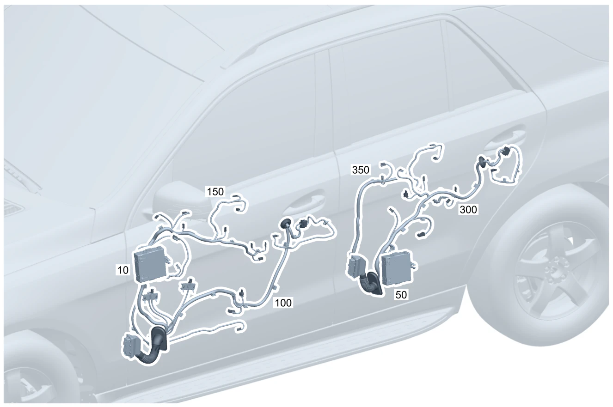

| № | Артикул | Название | Кол. | Примечание | Ограничение |
|---|---|---|---|---|---|
| 10 | A 206 900 69 15 | Блок управления (CONTROL UNIT) | 1 | Блок управления двери спереди слева Рулевое управление: Влево [672] ДЕТАЛЬ ПОСЛЕ УСТАН.ПРОВЕРИТЬ НА АКТУАЛЬНОСТЬ "ПРОШИВНОГО" ПО | |
| 10 | A 206 900 50 20 | Блок управления (CONTROL UNIT) | 1 | Блок управления двери спереди слева Рулевое управление: Влево [672] ДЕТАЛЬ ПОСЛЕ УСТАН.ПРОВЕРИТЬ НА АКТУАЛЬНОСТЬ "ПРОШИВНОГО" ПО | |
| 10 | A 206 900 59 19 | Блок управления (CONTROL UNIT) | 1 | Блок управления двери спереди слева Рулевое управление: Влево [672] ДЕТАЛЬ ПОСЛЕ УСТАН.ПРОВЕРИТЬ НА АКТУАЛЬНОСТЬ "ПРОШИВНОГО" ПО | |
| 10 | A 223 900 50 29 | Блок управления (CONTROL UNIT) | 1 | Блок управления двери спереди слева Рулевое управление: Влево [672] ДЕТАЛЬ ПОСЛЕ УСТАН.ПРОВЕРИТЬ НА АКТУАЛЬНОСТЬ "ПРОШИВНОГО" ПО | 233/234/885 |
| 10 | A 223 900 40 36 | Блок управления | 1 | Блок управления двери спереди слева Рулевое управление: Влево [672] ДЕТАЛЬ ПОСЛЕ УСТАН.ПРОВЕРИТЬ НА АКТУАЛЬНОСТЬ "ПРОШИВНОГО" ПО | 233/234/885 |
| 10 | A 223 900 57 33 | Блок управления (CONTROL UNIT) | 1 | Блок управления двери спереди слева Рулевое управление: Влево [672] ДЕТАЛЬ ПОСЛЕ УСТАН.ПРОВЕРИТЬ НА АКТУАЛЬНОСТЬ "ПРОШИВНОГО" ПО | 233/234/885 |
| 10 | A 206 900 76 18 | Блок управления (CONTROL UNIT) | 1 | Блок управления двери спереди слева Рулевое управление: Влево [672] ДЕТАЛЬ ПОСЛЕ УСТАН.ПРОВЕРИТЬ НА АКТУАЛЬНОСТЬ "ПРОШИВНОГО" ПО | 804 |
| 10 | A 206 900 76 18 | Блок управления (CONTROL UNIT) | 1 | Блок управления двери спереди слева Рулевое управление: Влево [672] ДЕТАЛЬ ПОСЛЕ УСТАН.ПРОВЕРИТЬ НА АКТУАЛЬНОСТЬ "ПРОШИВНОГО" ПО | |
| 10 | A 206 900 95 21 | Блок управления (CONTROL UNIT) | 1 | Блок управления двери спереди слева Рулевое управление: Влево [672] ДЕТАЛЬ ПОСЛЕ УСТАН.ПРОВЕРИТЬ НА АКТУАЛЬНОСТЬ "ПРОШИВНОГО" ПО | |
| 10 | A 223 900 63 34 | Блок управления (CONTROL UNIT) | 1 | Блок управления двери спереди слева Рулевое управление: Влево [672] ДЕТАЛЬ ПОСЛЕ УСТАН.ПРОВЕРИТЬ НА АКТУАЛЬНОСТЬ "ПРОШИВНОГО" ПО | 804+(233/234/885) |
| 10 | A 223 900 63 34 | Блок управления (CONTROL UNIT) | 1 | Блок управления двери спереди слева Рулевое управление: Влево [672] ДЕТАЛЬ ПОСЛЕ УСТАН.ПРОВЕРИТЬ НА АКТУАЛЬНОСТЬ "ПРОШИВНОГО" ПО | 233/234/885 |
| 10 | A 223 900 37 39 | Блок управления (CONTROL UNIT) | 1 | Блок управления двери спереди слева Рулевое управление: Влево [672] ДЕТАЛЬ ПОСЛЕ УСТАН.ПРОВЕРИТЬ НА АКТУАЛЬНОСТЬ "ПРОШИВНОГО" ПО | 233/234 |
| 10 | A 206 900 92 20 | Блок управления (CONTROL UNIT) | 1 | Блок управления двери спереди слева Рулевое управление: Влево [672] ДЕТАЛЬ ПОСЛЕ УСТАН.ПРОВЕРИТЬ НА АКТУАЛЬНОСТЬ "ПРОШИВНОГО" ПО | 804+054/805 |
| 10 | A 206 900 92 20 | Блок управления (CONTROL UNIT) | 1 | Блок управления двери спереди слева Рулевое управление: Влево [672] ДЕТАЛЬ ПОСЛЕ УСТАН.ПРОВЕРИТЬ НА АКТУАЛЬНОСТЬ "ПРОШИВНОГО" ПО | 804+054 |
| 10 | A 206 900 92 20 | Блок управления (CONTROL UNIT) | 1 | Блок управления двери спереди слева Рулевое управление: Влево [672] ДЕТАЛЬ ПОСЛЕ УСТАН.ПРОВЕРИТЬ НА АКТУАЛЬНОСТЬ "ПРОШИВНОГО" ПО | |
| 10 | A 206 900 67 21 | Блок управления (CONTROL UNIT) | 1 | Блок управления двери спереди слева Рулевое управление: Влево [672] ДЕТАЛЬ ПОСЛЕ УСТАН.ПРОВЕРИТЬ НА АКТУАЛЬНОСТЬ "ПРОШИВНОГО" ПО | (805/806/807) |
| 10 | A 206 900 67 21 | Блок управления (CONTROL UNIT) | 1 | Блок управления двери спереди слева Рулевое управление: Влево [672] ДЕТАЛЬ ПОСЛЕ УСТАН.ПРОВЕРИТЬ НА АКТУАЛЬНОСТЬ "ПРОШИВНОГО" ПО | 805 |
| 10 | A 206 900 67 21 | Блок управления (CONTROL UNIT) | 1 | Блок управления двери спереди слева Рулевое управление: Влево [672] ДЕТАЛЬ ПОСЛЕ УСТАН.ПРОВЕРИТЬ НА АКТУАЛЬНОСТЬ "ПРОШИВНОГО" ПО | |
| 10 | A 223 900 95 36 | Блок управления (CONTROL UNIT) | 1 | Блок управления двери спереди слева Рулевое управление: Влево [672] ДЕТАЛЬ ПОСЛЕ УСТАН.ПРОВЕРИТЬ НА АКТУАЛЬНОСТЬ "ПРОШИВНОГО" ПО | (804+054/805)+(233/234/885) |
| 10 | A 223 900 95 36 | Блок управления (CONTROL UNIT) | 1 | Блок управления двери спереди слева Рулевое управление: Влево [672] ДЕТАЛЬ ПОСЛЕ УСТАН.ПРОВЕРИТЬ НА АКТУАЛЬНОСТЬ "ПРОШИВНОГО" ПО | (804+054)+(233/234) |
| 10 | A 223 900 95 36 | Блок управления (CONTROL UNIT) | 1 | Блок управления двери спереди слева Рулевое управление: Влево [672] ДЕТАЛЬ ПОСЛЕ УСТАН.ПРОВЕРИТЬ НА АКТУАЛЬНОСТЬ "ПРОШИВНОГО" ПО | 233/234 |
| 10 | A 223 900 97 38 | Блок управления (CONTROL UNIT) | 1 | Блок управления двери спереди слева Рулевое управление: Влево [672] ДЕТАЛЬ ПОСЛЕ УСТАН.ПРОВЕРИТЬ НА АКТУАЛЬНОСТЬ "ПРОШИВНОГО" ПО | (805/806/807)+(233/234) |
| 10 | A 223 900 97 38 | Блок управления (CONTROL UNIT) | 1 | Блок управления двери спереди слева Рулевое управление: Влево [672] ДЕТАЛЬ ПОСЛЕ УСТАН.ПРОВЕРИТЬ НА АКТУАЛЬНОСТЬ "ПРОШИВНОГО" ПО | 805+(233/234) |
| 10 | A 223 900 97 38 | Блок управления (CONTROL UNIT) | 1 | Блок управления двери спереди слева Рулевое управление: Влево [672] ДЕТАЛЬ ПОСЛЕ УСТАН.ПРОВЕРИТЬ НА АКТУАЛЬНОСТЬ "ПРОШИВНОГО" ПО | 233/234 |
| 10 | A 206 900 75 23 | Блок управления (CONTROL UNIT) | 1 | Блок управления двери спереди слева Рулевое управление: Влево [672] ДЕТАЛЬ ПОСЛЕ УСТАН.ПРОВЕРИТЬ НА АКТУАЛЬНОСТЬ "ПРОШИВНОГО" ПО | (805+055) |
| 10 | A 206 900 75 23 | Блок управления (CONTROL UNIT) | 1 | Блок управления двери спереди слева Рулевое управление: Влево [672] ДЕТАЛЬ ПОСЛЕ УСТАН.ПРОВЕРИТЬ НА АКТУАЛЬНОСТЬ "ПРОШИВНОГО" ПО | |
| 10 | A 223 900 10 42 | Блок управления (CONTROL UNIT) | 1 | Блок управления двери спереди слева Рулевое управление: Влево [672] ДЕТАЛЬ ПОСЛЕ УСТАН.ПРОВЕРИТЬ НА АКТУАЛЬНОСТЬ "ПРОШИВНОГО" ПО | (805+055)+(233/234) |
| 10 | A 223 900 10 42 | Блок управления (CONTROL UNIT) | 1 | Блок управления двери спереди слева Рулевое управление: Влево [672] ДЕТАЛЬ ПОСЛЕ УСТАН.ПРОВЕРИТЬ НА АКТУАЛЬНОСТЬ "ПРОШИВНОГО" ПО | (233/234) |
| 10 | A 206 900 24 24 | Блок управления (CONTROL UNIT) | 1 | Блок управления двери спереди слева Рулевое управление: Влево [672] ДЕТАЛЬ ПОСЛЕ УСТАН.ПРОВЕРИТЬ НА АКТУАЛЬНОСТЬ "ПРОШИВНОГО" ПО | (806/807/808) |
| 10 | A 206 900 24 24 | Блок управления (CONTROL UNIT) | 1 | Блок управления двери спереди слева Рулевое управление: Влево [672] ДЕТАЛЬ ПОСЛЕ УСТАН.ПРОВЕРИТЬ НА АКТУАЛЬНОСТЬ "ПРОШИВНОГО" ПО | |
| 10 | A 223 900 45 43 | Блок управления (CONTROL UNIT) | 1 | Блок управления двери спереди слева Рулевое управление: Влево [672] ДЕТАЛЬ ПОСЛЕ УСТАН.ПРОВЕРИТЬ НА АКТУАЛЬНОСТЬ "ПРОШИВНОГО" ПО | (806/807/808)+(233/234) |
| 10 | A 223 900 45 43 | Блок управления (CONTROL UNIT) | 1 | Блок управления двери спереди слева Рулевое управление: Влево [672] ДЕТАЛЬ ПОСЛЕ УСТАН.ПРОВЕРИТЬ НА АКТУАЛЬНОСТЬ "ПРОШИВНОГО" ПО | (233/234) |
| 10 | A 206 900 71 15 | Блок управления (CONTROL UNIT) | 1 | Блок управления двери спереди справа Рулевое управление: Влево [672] ДЕТАЛЬ ПОСЛЕ УСТАН.ПРОВЕРИТЬ НА АКТУАЛЬНОСТЬ "ПРОШИВНОГО" ПО | |
| 10 | A 206 900 52 20 | Блок управления (CONTROL UNIT) | 1 | Блок управления двери спереди справа Рулевое управление: Влево [672] ДЕТАЛЬ ПОСЛЕ УСТАН.ПРОВЕРИТЬ НА АКТУАЛЬНОСТЬ "ПРОШИВНОГО" ПО | |
| 10 | A 206 900 61 19 | Блок управления (CONTROL UNIT) | 1 | Блок управления двери спереди справа Рулевое управление: Влево [672] ДЕТАЛЬ ПОСЛЕ УСТАН.ПРОВЕРИТЬ НА АКТУАЛЬНОСТЬ "ПРОШИВНОГО" ПО | |
| 10 | A 223 900 52 29 | Блок управления (CONTROL UNIT) | 1 | Блок управления двери спереди справа Рулевое управление: Влево [672] ДЕТАЛЬ ПОСЛЕ УСТАН.ПРОВЕРИТЬ НА АКТУАЛЬНОСТЬ "ПРОШИВНОГО" ПО | 233/234/885 |
| 10 | A 223 900 43 36 | Блок управления (CONTROL UNIT) | 1 | Блок управления двери спереди справа Рулевое управление: Влево [672] ДЕТАЛЬ ПОСЛЕ УСТАН.ПРОВЕРИТЬ НА АКТУАЛЬНОСТЬ "ПРОШИВНОГО" ПО | 233/234/885 |
| 10 | A 223 900 59 33 | Блок управления (CONTROL UNIT) | 1 | Блок управления двери спереди справа Рулевое управление: Влево [672] ДЕТАЛЬ ПОСЛЕ УСТАН.ПРОВЕРИТЬ НА АКТУАЛЬНОСТЬ "ПРОШИВНОГО" ПО | 233/234/885 |
| 10 | A 206 900 78 18 | Блок управления (CONTROL UNIT) | 1 | Блок управления двери спереди справа Рулевое управление: Влево [672] ДЕТАЛЬ ПОСЛЕ УСТАН.ПРОВЕРИТЬ НА АКТУАЛЬНОСТЬ "ПРОШИВНОГО" ПО | 804 |
| 10 | A 206 900 78 18 | Блок управления (CONTROL UNIT) | 1 | Блок управления двери спереди справа Рулевое управление: Влево [672] ДЕТАЛЬ ПОСЛЕ УСТАН.ПРОВЕРИТЬ НА АКТУАЛЬНОСТЬ "ПРОШИВНОГО" ПО | |
| 10 | A 206 900 97 21 | Блок управления (CONTROL UNIT) | 1 | Блок управления двери спереди справа Рулевое управление: Влево [672] ДЕТАЛЬ ПОСЛЕ УСТАН.ПРОВЕРИТЬ НА АКТУАЛЬНОСТЬ "ПРОШИВНОГО" ПО | |
| 10 | A 223 900 64 34 | Блок управления (CONTROL UNIT) | 1 | Блок управления двери спереди справа Рулевое управление: Влево [672] ДЕТАЛЬ ПОСЛЕ УСТАН.ПРОВЕРИТЬ НА АКТУАЛЬНОСТЬ "ПРОШИВНОГО" ПО | 804+(233/234/885) |
| 10 | A 223 900 64 34 | Блок управления (CONTROL UNIT) | 1 | Блок управления двери спереди справа Рулевое управление: Влево [672] ДЕТАЛЬ ПОСЛЕ УСТАН.ПРОВЕРИТЬ НА АКТУАЛЬНОСТЬ "ПРОШИВНОГО" ПО | 233/234/885 |
| 10 | A 223 900 40 39 | Блок управления (CONTROL UNIT) | 1 | Блок управления двери спереди справа Рулевое управление: Влево [672] ДЕТАЛЬ ПОСЛЕ УСТАН.ПРОВЕРИТЬ НА АКТУАЛЬНОСТЬ "ПРОШИВНОГО" ПО | 233/234 |
| 10 | A 206 900 94 20 | Блок управления (CONTROL UNIT) | 1 | Блок управления двери спереди справа Рулевое управление: Влево [672] ДЕТАЛЬ ПОСЛЕ УСТАН.ПРОВЕРИТЬ НА АКТУАЛЬНОСТЬ "ПРОШИВНОГО" ПО | 804+054/805 |
| 10 | A 206 900 94 20 | Блок управления (CONTROL UNIT) | 1 | Блок управления двери спереди справа Рулевое управление: Влево [672] ДЕТАЛЬ ПОСЛЕ УСТАН.ПРОВЕРИТЬ НА АКТУАЛЬНОСТЬ "ПРОШИВНОГО" ПО | 804+054 |
| 10 | A 206 900 94 20 | Блок управления (CONTROL UNIT) | 1 | Блок управления двери спереди справа Рулевое управление: Влево [672] ДЕТАЛЬ ПОСЛЕ УСТАН.ПРОВЕРИТЬ НА АКТУАЛЬНОСТЬ "ПРОШИВНОГО" ПО | |
| 10 | A 206 900 69 21 | Блок управления (CONTROL UNIT) | 1 | Блок управления двери спереди справа Рулевое управление: Влево [672] ДЕТАЛЬ ПОСЛЕ УСТАН.ПРОВЕРИТЬ НА АКТУАЛЬНОСТЬ "ПРОШИВНОГО" ПО | (805/806/807) |
| 10 | A 206 900 69 21 | Блок управления (CONTROL UNIT) | 1 | Блок управления двери спереди справа Рулевое управление: Влево [672] ДЕТАЛЬ ПОСЛЕ УСТАН.ПРОВЕРИТЬ НА АКТУАЛЬНОСТЬ "ПРОШИВНОГО" ПО | 805 |
| 10 | A 206 900 69 21 | Блок управления (CONTROL UNIT) | 1 | Блок управления двери спереди справа Рулевое управление: Влево [672] ДЕТАЛЬ ПОСЛЕ УСТАН.ПРОВЕРИТЬ НА АКТУАЛЬНОСТЬ "ПРОШИВНОГО" ПО | |
| 10 | A 223 900 98 36 | Блок управления (CONTROL UNIT) | 1 | Блок управления двери спереди справа Рулевое управление: Влево [672] ДЕТАЛЬ ПОСЛЕ УСТАН.ПРОВЕРИТЬ НА АКТУАЛЬНОСТЬ "ПРОШИВНОГО" ПО | (804+054/805)+(233/234/885) |
| 10 | A 223 900 98 36 | Блок управления (CONTROL UNIT) | 1 | Блок управления двери спереди справа Рулевое управление: Влево [672] ДЕТАЛЬ ПОСЛЕ УСТАН.ПРОВЕРИТЬ НА АКТУАЛЬНОСТЬ "ПРОШИВНОГО" ПО | (804+054)+(233/234) |
| 10 | A 223 900 98 36 | Блок управления (CONTROL UNIT) | 1 | Блок управления двери спереди справа Рулевое управление: Влево [672] ДЕТАЛЬ ПОСЛЕ УСТАН.ПРОВЕРИТЬ НА АКТУАЛЬНОСТЬ "ПРОШИВНОГО" ПО | 233/234 |
| 10 | A 223 900 00 39 | Блок управления (CONTROL UNIT) | 1 | Блок управления двери спереди справа Рулевое управление: Влево [672] ДЕТАЛЬ ПОСЛЕ УСТАН.ПРОВЕРИТЬ НА АКТУАЛЬНОСТЬ "ПРОШИВНОГО" ПО | (805/806/807)+(233/234) |
| 10 | A 223 900 00 39 | Блок управления (CONTROL UNIT) | 1 | Блок управления двери спереди справа Рулевое управление: Влево [672] ДЕТАЛЬ ПОСЛЕ УСТАН.ПРОВЕРИТЬ НА АКТУАЛЬНОСТЬ "ПРОШИВНОГО" ПО | 805+(233/234) |
| 10 | A 223 900 00 39 | Блок управления (CONTROL UNIT) | 1 | Блок управления двери спереди справа Рулевое управление: Влево [672] ДЕТАЛЬ ПОСЛЕ УСТАН.ПРОВЕРИТЬ НА АКТУАЛЬНОСТЬ "ПРОШИВНОГО" ПО | 233/234 |
| 10 | A 206 900 77 23 | Блок управления (CONTROL UNIT) | 1 | Блок управления двери спереди справа Рулевое управление: Влево [672] ДЕТАЛЬ ПОСЛЕ УСТАН.ПРОВЕРИТЬ НА АКТУАЛЬНОСТЬ "ПРОШИВНОГО" ПО | (805+055) |
| 10 | A 206 900 77 23 | Блок управления (CONTROL UNIT) | 1 | Блок управления двери спереди справа Рулевое управление: Влево [672] ДЕТАЛЬ ПОСЛЕ УСТАН.ПРОВЕРИТЬ НА АКТУАЛЬНОСТЬ "ПРОШИВНОГО" ПО | |
| 10 | A 223 900 13 42 | Блок управления (CONTROL UNIT) | 1 | Блок управления двери спереди справа Рулевое управление: Влево [672] ДЕТАЛЬ ПОСЛЕ УСТАН.ПРОВЕРИТЬ НА АКТУАЛЬНОСТЬ "ПРОШИВНОГО" ПО | (805+055)+(233/234) |
| 10 | A 223 900 13 42 | Блок управления (CONTROL UNIT) | 1 | Блок управления двери спереди справа Рулевое управление: Влево [672] ДЕТАЛЬ ПОСЛЕ УСТАН.ПРОВЕРИТЬ НА АКТУАЛЬНОСТЬ "ПРОШИВНОГО" ПО | (233/234) |
| 10 | A 206 900 26 24 | Блок управления (CONTROL UNIT) | 1 | Блок управления двери спереди справа Рулевое управление: Влево [672] ДЕТАЛЬ ПОСЛЕ УСТАН.ПРОВЕРИТЬ НА АКТУАЛЬНОСТЬ "ПРОШИВНОГО" ПО | (806/807/808) |
| 10 | A 206 900 26 24 | Блок управления (CONTROL UNIT) | 1 | Блок управления двери спереди справа Рулевое управление: Влево [672] ДЕТАЛЬ ПОСЛЕ УСТАН.ПРОВЕРИТЬ НА АКТУАЛЬНОСТЬ "ПРОШИВНОГО" ПО | |
| 10 | A 223 900 48 43 | Блок управления (CONTROL UNIT) | 1 | Блок управления двери спереди справа Рулевое управление: Влево [672] ДЕТАЛЬ ПОСЛЕ УСТАН.ПРОВЕРИТЬ НА АКТУАЛЬНОСТЬ "ПРОШИВНОГО" ПО | (806/807/808)+(233/234) |
| 10 | A 223 900 48 43 | Блок управления (CONTROL UNIT) | 1 | Блок управления двери спереди справа Рулевое управление: Влево [672] ДЕТАЛЬ ПОСЛЕ УСТАН.ПРОВЕРИТЬ НА АКТУАЛЬНОСТЬ "ПРОШИВНОГО" ПО | (233/234) |
| 10 | A 223 900 41 34 | Блок управления (CONTROL UNIT) | 1 | Блок управления двери спереди слева Рулевое управление: Вправо [672] ДЕТАЛЬ ПОСЛЕ УСТАН.ПРОВЕРИТЬ НА АКТУАЛЬНОСТЬ "ПРОШИВНОГО" ПО | (233/234/885) |
| 10 | A 223 900 67 33 | Блок управления (CONTROL UNIT) | 1 | Блок управления двери спереди слева Рулевое управление: Вправо [672] ДЕТАЛЬ ПОСЛЕ УСТАН.ПРОВЕРИТЬ НА АКТУАЛЬНОСТЬ "ПРОШИВНОГО" ПО | (233/234/885) |
| 10 | A 223 900 39 34 | Блок управления (CONTROL UNIT) | 1 | Блок управления двери спереди справа Рулевое управление: Вправо [672] ДЕТАЛЬ ПОСЛЕ УСТАН.ПРОВЕРИТЬ НА АКТУАЛЬНОСТЬ "ПРОШИВНОГО" ПО | (233/234/885) |
| 10 | A 223 900 41 34 | Блок управления (CONTROL UNIT) | 1 | Блок управления двери спереди справа Рулевое управление: Влево [672] ДЕТАЛЬ ПОСЛЕ УСТАН.ПРОВЕРИТЬ НА АКТУАЛЬНОСТЬ "ПРОШИВНОГО" ПО | (233/234/885) |
| 10 | A 223 900 65 33 | Блок управления (CONTROL UNIT) | 1 | Блок управления двери спереди справа Рулевое управление: Вправо [672] ДЕТАЛЬ ПОСЛЕ УСТАН.ПРОВЕРИТЬ НА АКТУАЛЬНОСТЬ "ПРОШИВНОГО" ПО | (233/234/885) |
| 10 | A 223 900 67 33 | Блок управления (CONTROL UNIT) | 1 | Блок управления двери спереди справа Рулевое управление: Влево [672] ДЕТАЛЬ ПОСЛЕ УСТАН.ПРОВЕРИТЬ НА АКТУАЛЬНОСТЬ "ПРОШИВНОГО" ПО | (233/234/885) |
| 50 | A 206 900 72 15 | Блок управления (CONTROL UNIT) | 1 | Блок управления задней дверью слева [672] ДЕТАЛЬ ПОСЛЕ УСТАН.ПРОВЕРИТЬ НА АКТУАЛЬНОСТЬ "ПРОШИВНОГО" ПО | |
| 50 | A 206 900 53 20 | Блок управления (CONTROL UNIT) | 1 | Блок управления задней дверью слева [672] ДЕТАЛЬ ПОСЛЕ УСТАН.ПРОВЕРИТЬ НА АКТУАЛЬНОСТЬ "ПРОШИВНОГО" ПО | |
| 50 | A 206 900 62 19 | Блок управления (CONTROL UNIT) | 1 | Блок управления задней дверью слева [672] ДЕТАЛЬ ПОСЛЕ УСТАН.ПРОВЕРИТЬ НА АКТУАЛЬНОСТЬ "ПРОШИВНОГО" ПО | |
| 50 | A 223 900 54 29 | Блок управления (CONTROL UNIT) | 1 | Блок управления задней дверью слева [672] ДЕТАЛЬ ПОСЛЕ УСТАН.ПРОВЕРИТЬ НА АКТУАЛЬНОСТЬ "ПРОШИВНОГО" ПО | 247/872/885 |
| 50 | A 223 900 46 36 | Блок управления (CONTROL UNIT) | 1 | Блок управления задней дверью слева [672] ДЕТАЛЬ ПОСЛЕ УСТАН.ПРОВЕРИТЬ НА АКТУАЛЬНОСТЬ "ПРОШИВНОГО" ПО | 247/872/885 |
| 50 | A 223 900 61 33 | Блок управления (CONTROL UNIT) | 1 | Блок управления задней дверью слева [672] ДЕТАЛЬ ПОСЛЕ УСТАН.ПРОВЕРИТЬ НА АКТУАЛЬНОСТЬ "ПРОШИВНОГО" ПО | 247/872/885 |
| 50 | A 206 900 79 18 | Блок управления (CONTROL UNIT) | 1 | Блок управления задней дверью слева [672] ДЕТАЛЬ ПОСЛЕ УСТАН.ПРОВЕРИТЬ НА АКТУАЛЬНОСТЬ "ПРОШИВНОГО" ПО | 804 |
| 50 | A 206 900 79 18 | Блок управления (CONTROL UNIT) | 1 | Блок управления задней дверью слева [672] ДЕТАЛЬ ПОСЛЕ УСТАН.ПРОВЕРИТЬ НА АКТУАЛЬНОСТЬ "ПРОШИВНОГО" ПО | |
| 50 | A 206 900 98 21 | Блок управления (CONTROL UNIT) | 1 | Блок управления задней дверью слева [672] ДЕТАЛЬ ПОСЛЕ УСТАН.ПРОВЕРИТЬ НА АКТУАЛЬНОСТЬ "ПРОШИВНОГО" ПО | |
| 50 | A 223 900 65 34 | Блок управления (CONTROL UNIT) | 1 | Блок управления задней дверью слева [672] ДЕТАЛЬ ПОСЛЕ УСТАН.ПРОВЕРИТЬ НА АКТУАЛЬНОСТЬ "ПРОШИВНОГО" ПО | 804+(247/872/885) |
| 50 | A 223 900 65 34 | Блок управления (CONTROL UNIT) | 1 | Блок управления задней дверью слева [672] ДЕТАЛЬ ПОСЛЕ УСТАН.ПРОВЕРИТЬ НА АКТУАЛЬНОСТЬ "ПРОШИВНОГО" ПО | 247/872/885 |
| 50 | A 223 900 43 39 | Блок управления (CONTROL UNIT) | 1 | Блок управления задней дверью слева [672] ДЕТАЛЬ ПОСЛЕ УСТАН.ПРОВЕРИТЬ НА АКТУАЛЬНОСТЬ "ПРОШИВНОГО" ПО | 247/872 |
| 50 | A 206 900 95 20 | Блок управления (CONTROL UNIT) | 1 | Блок управления задней дверью слева [672] ДЕТАЛЬ ПОСЛЕ УСТАН.ПРОВЕРИТЬ НА АКТУАЛЬНОСТЬ "ПРОШИВНОГО" ПО | 804+054/805 |
| 50 | A 206 900 95 20 | Блок управления (CONTROL UNIT) | 1 | Блок управления задней дверью слева [672] ДЕТАЛЬ ПОСЛЕ УСТАН.ПРОВЕРИТЬ НА АКТУАЛЬНОСТЬ "ПРОШИВНОГО" ПО | 804+054 |
| 50 | A 206 900 95 20 | Блок управления (CONTROL UNIT) | 1 | Блок управления задней дверью слева [672] ДЕТАЛЬ ПОСЛЕ УСТАН.ПРОВЕРИТЬ НА АКТУАЛЬНОСТЬ "ПРОШИВНОГО" ПО | |
| 50 | A 206 900 74 21 | Блок управления (CONTROL UNIT) | 1 | Блок управления задней дверью слева [672] ДЕТАЛЬ ПОСЛЕ УСТАН.ПРОВЕРИТЬ НА АКТУАЛЬНОСТЬ "ПРОШИВНОГО" ПО | (805/806/807) |
| 50 | A 206 900 74 21 | Блок управления (CONTROL UNIT) | 1 | Блок управления задней дверью слева [672] ДЕТАЛЬ ПОСЛЕ УСТАН.ПРОВЕРИТЬ НА АКТУАЛЬНОСТЬ "ПРОШИВНОГО" ПО | 805 |
| 50 | A 206 900 74 21 | Блок управления (CONTROL UNIT) | 1 | Блок управления задней дверью слева [672] ДЕТАЛЬ ПОСЛЕ УСТАН.ПРОВЕРИТЬ НА АКТУАЛЬНОСТЬ "ПРОШИВНОГО" ПО | |
| 50 | A 223 900 01 37 | Блок управления (CONTROL UNIT) | 1 | Блок управления задней дверью слева [672] ДЕТАЛЬ ПОСЛЕ УСТАН.ПРОВЕРИТЬ НА АКТУАЛЬНОСТЬ "ПРОШИВНОГО" ПО | (804+054/805)+(247/872/885) |
| 50 | A 223 900 01 37 | Блок управления (CONTROL UNIT) | 1 | Блок управления задней дверью слева [672] ДЕТАЛЬ ПОСЛЕ УСТАН.ПРОВЕРИТЬ НА АКТУАЛЬНОСТЬ "ПРОШИВНОГО" ПО | (804+054)+(247/872) |
| 50 | A 223 900 01 37 | Блок управления (CONTROL UNIT) | 1 | Блок управления задней дверью слева [672] ДЕТАЛЬ ПОСЛЕ УСТАН.ПРОВЕРИТЬ НА АКТУАЛЬНОСТЬ "ПРОШИВНОГО" ПО | 247/872 |
| 50 | A 223 900 03 39 | Блок управления (CONTROL UNIT) | 1 | Блок управления задней дверью слева [672] ДЕТАЛЬ ПОСЛЕ УСТАН.ПРОВЕРИТЬ НА АКТУАЛЬНОСТЬ "ПРОШИВНОГО" ПО | (805/806/807)+(247/872) |
| 50 | A 223 900 03 39 | Блок управления (CONTROL UNIT) | 1 | Блок управления задней дверью слева [672] ДЕТАЛЬ ПОСЛЕ УСТАН.ПРОВЕРИТЬ НА АКТУАЛЬНОСТЬ "ПРОШИВНОГО" ПО | 805+(247/872) |
| 50 | A 223 900 03 39 | Блок управления (CONTROL UNIT) | 1 | Блок управления задней дверью слева [672] ДЕТАЛЬ ПОСЛЕ УСТАН.ПРОВЕРИТЬ НА АКТУАЛЬНОСТЬ "ПРОШИВНОГО" ПО | 247/872 |
| 50 | A 206 900 78 23 | Блок управления (CONTROL UNIT) | 1 | Блок управления задней дверью слева [672] ДЕТАЛЬ ПОСЛЕ УСТАН.ПРОВЕРИТЬ НА АКТУАЛЬНОСТЬ "ПРОШИВНОГО" ПО | (805+055) |
| 50 | A 206 900 78 23 | Блок управления (CONTROL UNIT) | 1 | Блок управления задней дверью слева [672] ДЕТАЛЬ ПОСЛЕ УСТАН.ПРОВЕРИТЬ НА АКТУАЛЬНОСТЬ "ПРОШИВНОГО" ПО | |
| 50 | A 223 900 16 42 | Блок управления (CONTROL UNIT) | 1 | Блок управления задней дверью слева [672] ДЕТАЛЬ ПОСЛЕ УСТАН.ПРОВЕРИТЬ НА АКТУАЛЬНОСТЬ "ПРОШИВНОГО" ПО | (805+055)+(247/872) |
| 50 | A 223 900 16 42 | Блок управления (CONTROL UNIT) | 1 | Блок управления задней дверью слева [672] ДЕТАЛЬ ПОСЛЕ УСТАН.ПРОВЕРИТЬ НА АКТУАЛЬНОСТЬ "ПРОШИВНОГО" ПО | (247/872) |
| 50 | A 206 900 27 24 | Блок управления (CONTROL UNIT) | 1 | Блок управления задней дверью слева [672] ДЕТАЛЬ ПОСЛЕ УСТАН.ПРОВЕРИТЬ НА АКТУАЛЬНОСТЬ "ПРОШИВНОГО" ПО | (806/807/808) |
| 50 | A 206 900 27 24 | Блок управления (CONTROL UNIT) | 1 | Блок управления задней дверью слева [672] ДЕТАЛЬ ПОСЛЕ УСТАН.ПРОВЕРИТЬ НА АКТУАЛЬНОСТЬ "ПРОШИВНОГО" ПО | |
| 50 | A 223 900 51 43 | Блок управления (CONTROL UNIT) | 1 | Блок управления задней дверью слева [672] ДЕТАЛЬ ПОСЛЕ УСТАН.ПРОВЕРИТЬ НА АКТУАЛЬНОСТЬ "ПРОШИВНОГО" ПО | (806/807/808)+(247/872) |
| 50 | A 223 900 51 43 | Блок управления (CONTROL UNIT) | 1 | Блок управления задней дверью слева [672] ДЕТАЛЬ ПОСЛЕ УСТАН.ПРОВЕРИТЬ НА АКТУАЛЬНОСТЬ "ПРОШИВНОГО" ПО | (247/872) |
| 50 | A 206 900 74 15 | Блок управления (CONTROL UNIT) | 1 | Блок управления задней дверью справа [672] ДЕТАЛЬ ПОСЛЕ УСТАН.ПРОВЕРИТЬ НА АКТУАЛЬНОСТЬ "ПРОШИВНОГО" ПО | |
| 50 | A 206 900 55 20 | Блок управления (CONTROL UNIT) | 1 | Блок управления задней дверью справа [672] ДЕТАЛЬ ПОСЛЕ УСТАН.ПРОВЕРИТЬ НА АКТУАЛЬНОСТЬ "ПРОШИВНОГО" ПО | |
| 50 | A 206 900 64 19 | Блок управления (CONTROL UNIT) | 1 | Блок управления задней дверью справа [672] ДЕТАЛЬ ПОСЛЕ УСТАН.ПРОВЕРИТЬ НА АКТУАЛЬНОСТЬ "ПРОШИВНОГО" ПО | |
| 50 | A 223 900 56 29 | Блок управления (CONTROL UNIT) | 1 | Блок управления задней дверью справа [672] ДЕТАЛЬ ПОСЛЕ УСТАН.ПРОВЕРИТЬ НА АКТУАЛЬНОСТЬ "ПРОШИВНОГО" ПО | 247/872/885 |
| 50 | A 223 900 49 36 | Блок управления (CONTROL UNIT) | 1 | Блок управления задней дверью справа [672] ДЕТАЛЬ ПОСЛЕ УСТАН.ПРОВЕРИТЬ НА АКТУАЛЬНОСТЬ "ПРОШИВНОГО" ПО | 247/872/885 |
| 50 | A 223 900 63 33 | Блок управления (CONTROL UNIT) | 1 | Блок управления задней дверью справа [672] ДЕТАЛЬ ПОСЛЕ УСТАН.ПРОВЕРИТЬ НА АКТУАЛЬНОСТЬ "ПРОШИВНОГО" ПО | 247/872/885 |
| 50 | A 206 900 81 18 | Блок управления (CONTROL UNIT) | 1 | Блок управления задней дверью справа [672] ДЕТАЛЬ ПОСЛЕ УСТАН.ПРОВЕРИТЬ НА АКТУАЛЬНОСТЬ "ПРОШИВНОГО" ПО | 804 |
| 50 | A 206 900 81 18 | Блок управления (CONTROL UNIT) | 1 | Блок управления задней дверью справа [672] ДЕТАЛЬ ПОСЛЕ УСТАН.ПРОВЕРИТЬ НА АКТУАЛЬНОСТЬ "ПРОШИВНОГО" ПО | |
| 50 | A 206 900 00 22 | Блок управления (CONTROL UNIT) | 1 | Блок управления задней дверью справа [672] ДЕТАЛЬ ПОСЛЕ УСТАН.ПРОВЕРИТЬ НА АКТУАЛЬНОСТЬ "ПРОШИВНОГО" ПО | |
| 50 | A 223 900 66 34 | Блок управления (CONTROL UNIT) | 1 | Блок управления задней дверью справа [672] ДЕТАЛЬ ПОСЛЕ УСТАН.ПРОВЕРИТЬ НА АКТУАЛЬНОСТЬ "ПРОШИВНОГО" ПО | 804+(247/872/885) |
| 50 | A 223 900 66 34 | Блок управления (CONTROL UNIT) | 1 | Блок управления задней дверью справа [672] ДЕТАЛЬ ПОСЛЕ УСТАН.ПРОВЕРИТЬ НА АКТУАЛЬНОСТЬ "ПРОШИВНОГО" ПО | 247/872/885 |
| 50 | A 223 900 46 39 | Блок управления (CONTROL UNIT) | 1 | Блок управления задней дверью справа [672] ДЕТАЛЬ ПОСЛЕ УСТАН.ПРОВЕРИТЬ НА АКТУАЛЬНОСТЬ "ПРОШИВНОГО" ПО | 247/872 |
| 50 | A 206 900 97 20 | Блок управления (CONTROL UNIT) | 1 | Блок управления задней дверью справа [672] ДЕТАЛЬ ПОСЛЕ УСТАН.ПРОВЕРИТЬ НА АКТУАЛЬНОСТЬ "ПРОШИВНОГО" ПО | 804+054/805 |
| 50 | A 206 900 97 20 | Блок управления (CONTROL UNIT) | 1 | Блок управления задней дверью справа [672] ДЕТАЛЬ ПОСЛЕ УСТАН.ПРОВЕРИТЬ НА АКТУАЛЬНОСТЬ "ПРОШИВНОГО" ПО | 804+054 |
| 50 | A 206 900 97 20 | Блок управления (CONTROL UNIT) | 1 | Блок управления задней дверью справа [672] ДЕТАЛЬ ПОСЛЕ УСТАН.ПРОВЕРИТЬ НА АКТУАЛЬНОСТЬ "ПРОШИВНОГО" ПО | |
| 50 | A 206 900 72 21 | Блок управления (CONTROL UNIT) | 1 | Блок управления задней дверью справа [672] ДЕТАЛЬ ПОСЛЕ УСТАН.ПРОВЕРИТЬ НА АКТУАЛЬНОСТЬ "ПРОШИВНОГО" ПО | (805/806/807) |
| 50 | A 206 900 72 21 | Блок управления (CONTROL UNIT) | 1 | Блок управления задней дверью справа [672] ДЕТАЛЬ ПОСЛЕ УСТАН.ПРОВЕРИТЬ НА АКТУАЛЬНОСТЬ "ПРОШИВНОГО" ПО | 805 |
| 50 | A 206 900 72 21 | Блок управления (CONTROL UNIT) | 1 | Блок управления задней дверью справа [672] ДЕТАЛЬ ПОСЛЕ УСТАН.ПРОВЕРИТЬ НА АКТУАЛЬНОСТЬ "ПРОШИВНОГО" ПО | |
| 50 | A 223 900 04 37 | Блок управления (CONTROL UNIT) | 1 | Блок управления задней дверью справа [672] ДЕТАЛЬ ПОСЛЕ УСТАН.ПРОВЕРИТЬ НА АКТУАЛЬНОСТЬ "ПРОШИВНОГО" ПО | (804+054/805)+(247/872/885) |
| 50 | A 223 900 04 37 | Блок управления (CONTROL UNIT) | 1 | Блок управления задней дверью справа [672] ДЕТАЛЬ ПОСЛЕ УСТАН.ПРОВЕРИТЬ НА АКТУАЛЬНОСТЬ "ПРОШИВНОГО" ПО | (804+054)+(247/872) |
| 50 | A 223 900 04 37 | Блок управления (CONTROL UNIT) | 1 | Блок управления задней дверью справа [672] ДЕТАЛЬ ПОСЛЕ УСТАН.ПРОВЕРИТЬ НА АКТУАЛЬНОСТЬ "ПРОШИВНОГО" ПО | 247/872 |
| 50 | A 223 900 06 39 | Блок управления (CONTROL UNIT) | 1 | Блок управления задней дверью справа [672] ДЕТАЛЬ ПОСЛЕ УСТАН.ПРОВЕРИТЬ НА АКТУАЛЬНОСТЬ "ПРОШИВНОГО" ПО | (805/806/807)+(247/872) |
| 50 | A 223 900 06 39 | Блок управления (CONTROL UNIT) | 1 | Блок управления задней дверью справа [672] ДЕТАЛЬ ПОСЛЕ УСТАН.ПРОВЕРИТЬ НА АКТУАЛЬНОСТЬ "ПРОШИВНОГО" ПО | 805+(247/872) |
| 50 | A 223 900 06 39 | Блок управления (CONTROL UNIT) | 1 | Блок управления задней дверью справа [672] ДЕТАЛЬ ПОСЛЕ УСТАН.ПРОВЕРИТЬ НА АКТУАЛЬНОСТЬ "ПРОШИВНОГО" ПО | 247/872 |
| 50 | A 206 900 79 23 | Блок управления (CONTROL UNIT) | 1 | Блок управления задней дверью справа [672] ДЕТАЛЬ ПОСЛЕ УСТАН.ПРОВЕРИТЬ НА АКТУАЛЬНОСТЬ "ПРОШИВНОГО" ПО | (805+055) |
| 50 | A 206 900 79 23 | Блок управления (CONTROL UNIT) | 1 | Блок управления задней дверью справа [672] ДЕТАЛЬ ПОСЛЕ УСТАН.ПРОВЕРИТЬ НА АКТУАЛЬНОСТЬ "ПРОШИВНОГО" ПО | |
| 50 | A 223 900 19 42 | Блок управления (CONTROL UNIT) | 1 | Блок управления задней дверью справа [672] ДЕТАЛЬ ПОСЛЕ УСТАН.ПРОВЕРИТЬ НА АКТУАЛЬНОСТЬ "ПРОШИВНОГО" ПО | (805+055)+(247/872) |
| 50 | A 223 900 19 42 | Блок управления (CONTROL UNIT) | 1 | Блок управления задней дверью справа [672] ДЕТАЛЬ ПОСЛЕ УСТАН.ПРОВЕРИТЬ НА АКТУАЛЬНОСТЬ "ПРОШИВНОГО" ПО | (247/872) |
| 50 | A 206 900 28 24 | Блок управления (CONTROL UNIT) | 1 | Блок управления задней дверью справа [672] ДЕТАЛЬ ПОСЛЕ УСТАН.ПРОВЕРИТЬ НА АКТУАЛЬНОСТЬ "ПРОШИВНОГО" ПО | (806/807/808) |
| 50 | A 206 900 28 24 | Блок управления (CONTROL UNIT) | 1 | Блок управления задней дверью справа [672] ДЕТАЛЬ ПОСЛЕ УСТАН.ПРОВЕРИТЬ НА АКТУАЛЬНОСТЬ "ПРОШИВНОГО" ПО | |
| 50 | A 223 900 54 43 | Блок управления (CONTROL UNIT) | 1 | Блок управления задней дверью справа [672] ДЕТАЛЬ ПОСЛЕ УСТАН.ПРОВЕРИТЬ НА АКТУАЛЬНОСТЬ "ПРОШИВНОГО" ПО | (806/807/808)+(247/872) |
| 50 | A 223 900 54 43 | Блок управления (CONTROL UNIT) | 1 | Блок управления задней дверью справа [672] ДЕТАЛЬ ПОСЛЕ УСТАН.ПРОВЕРИТЬ НА АКТУАЛЬНОСТЬ "ПРОШИВНОГО" ПО | (247/872) |
| 50 | A 223 900 43 34 | Блок управления (CONTROL UNIT) | 1 | Блок управления задней дверью слева [672] ДЕТАЛЬ ПОСЛЕ УСТАН.ПРОВЕРИТЬ НА АКТУАЛЬНОСТЬ "ПРОШИВНОГО" ПО | (247/872/885) |
| 50 | A 223 900 69 33 | Блок управления (CONTROL UNIT) | 1 | Блок управления задней дверью слева [672] ДЕТАЛЬ ПОСЛЕ УСТАН.ПРОВЕРИТЬ НА АКТУАЛЬНОСТЬ "ПРОШИВНОГО" ПО | (247/872/885) |
| 50 | A 223 900 45 34 | Блок управления (CONTROL UNIT) | 1 | Блок управления задней дверью справа [672] ДЕТАЛЬ ПОСЛЕ УСТАН.ПРОВЕРИТЬ НА АКТУАЛЬНОСТЬ "ПРОШИВНОГО" ПО | (247/872/885) |
| 50 | A 223 900 71 33 | Блок управления (CONTROL UNIT) | 1 | Блок управления задней дверью справа [672] ДЕТАЛЬ ПОСЛЕ УСТАН.ПРОВЕРИТЬ НА АКТУАЛЬНОСТЬ "ПРОШИВНОГО" ПО | (247/872/885) |
| 100 | A 254 540 02 25 | Электрический жгут (ELECTRICAL WIRING HARNESS) | 1 | Дверь спереди слева, разъем двери к блоку управления и потребителю | 889 |
| 100 | A 254 540 06 25 | Электрический жгут (ELECTRICAL WIRING HARNESS) | 1 | Дверь спереди слева, разъем двери к блоку управления и потребителю | 889+810 |
| 100 | A 254 540 75 21 | Электрический жгут (ELECTRICAL WIRING HARNESS) | 1 | Дверь спереди слева, разъем двери к блоку управления и потребителю | 501 |
| 100 | A 254 540 79 21 | Электрический жгут (ELECTRICAL WIRING HARNESS) | 1 | Дверь спереди слева, разъем двери к блоку управления и потребителю | 501+853 |
| 100 | A 254 540 83 21 | Электрический жгут (ELECTRICAL WIRING HARNESS) | 1 | Дверь спереди слева, разъем двери к блоку управления и потребителю | 501+810 |
| 100 | A 254 540 08 25 | Электрический жгут (ELECTRICAL WIRING HARNESS) | 1 | Дверь спереди слева, разъем двери к блоку управления и потребителю | 501+889 |
| 100 | A 254 540 12 25 | Электрический жгут (ELECTRICAL WIRING HARNESS) | 1 | Дверь спереди слева, разъем двери к блоку управления и потребителю | 501+889+810 |
| 100 | A 254 540 02 25 | Электрический жгут (ELECTRICAL WIRING HARNESS) | 1 | Дверь спереди справа, разъем двери к блоку управления и потребителю | 889 |
| 100 | A 254 540 06 25 | Электрический жгут (ELECTRICAL WIRING HARNESS) | 1 | Дверь спереди справа, разъем двери к блоку управления и потребителю | 889+810 |
| 100 | A 254 540 75 21 | Электрический жгут (ELECTRICAL WIRING HARNESS) | 1 | Дверь спереди справа, разъем двери к блоку управления и потребителю | 501 |
| 100 | A 254 540 79 21 | Электрический жгут (ELECTRICAL WIRING HARNESS) | 1 | Дверь спереди справа, разъем двери к блоку управления и потребителю | 501+853 |
| 100 | A 254 540 83 21 | Электрический жгут (ELECTRICAL WIRING HARNESS) | 1 | Дверь спереди справа, разъем двери к блоку управления и потребителю | 501+810 |
| 100 | A 254 540 08 25 | Электрический жгут (ELECTRICAL WIRING HARNESS) | 1 | Дверь спереди справа, разъем двери к блоку управления и потребителю | 501+889 |
| 100 | A 254 540 12 25 | Электрический жгут (ELECTRICAL WIRING HARNESS) | 1 | Дверь спереди справа, разъем двери к блоку управления и потребителю | 501+889+810 |
| 100 | A 254 540 27 21 | Электрический жгут (ELECTRICAL WIRING HARNESS) | 1 | Дверь спереди слева, разъем двери к блоку управления и потребителю | |
| 100 | A 254 540 35 21 | Электрический жгут (ELECTRICAL WIRING HARNESS) | 1 | Дверь спереди слева, разъем двери к блоку управления и потребителю | 810 |
| 100 | A 254 540 27 21 | Электрический жгут (ELECTRICAL WIRING HARNESS) | 1 | Дверь спереди справа, разъем двери к блоку управления и потребителю | |
| 100 | A 254 540 35 21 | Электрический жгут (ELECTRICAL WIRING HARNESS) | 1 | Дверь спереди справа, разъем двери к блоку управления и потребителю | 810 |
| 150 | A 254 540 60 19 | Электрический жгут (ELECTRICAL WIRING HARNESS) | 1 | Дверь спереди слева, блок управления к потребителю Рулевое управление: Влево | |
| 150 | A 254 540 95 19 | Электрический жгут (ELECTRICAL WIRING HARNESS) | 1 | Дверь спереди справа, блок управления к потребителю Рулевое управление: Влево | (221/275/873/401) |
| 150 | A 254 540 98 19 | Электрический жгут (ELECTRICAL WIRING HARNESS) | 1 | Дверь спереди справа, блок управления к потребителю Рулевое управление: Влево | (853/810) |
| 150 | A 254 540 01 20 | Электрический жгут (ELECTRICAL WIRING HARNESS) | 1 | Дверь спереди справа, блок управления к потребителю Рулевое управление: Влево | (853/810)+(221/275/873/401) |
| 150 | A 254 540 02 20 | Электрический жгут (ELECTRICAL WIRING HARNESS) | 1 | Дверь спереди справа, блок управления к потребителю Рулевое управление: Влево | 894 |
| 150 | A 254 540 03 20 | Электрический жгут (ELECTRICAL WIRING HARNESS) | 1 | Дверь спереди справа, блок управления к потребителю Рулевое управление: Влево | (221/275/873/401)+894 |
| 150 | A 254 540 04 20 | Электрический жгут (ELECTRICAL WIRING HARNESS) | 1 | Дверь спереди справа, блок управления к потребителю Рулевое управление: Влево | (853/810)+894 |
| 150 | A 254 540 05 20 | Электрический жгут (ELECTRICAL WIRING HARNESS) | 1 | Дверь спереди справа, блок управления к потребителю Рулевое управление: Влево | (853/810)+(221/275/873/401)+894 |
| 150 | A 254 540 63 19 | Электрический жгут (ELECTRICAL WIRING HARNESS) | 1 | Дверь спереди слева, блок управления к потребителю Рулевое управление: Влево | 2U2 |
| 150 | A 254 540 66 19 | Электрический жгут (ELECTRICAL WIRING HARNESS) | 1 | Дверь спереди слева, блок управления к потребителю Рулевое управление: Влево | (221/275/873/401) |
| 150 | A 254 540 69 19 | Электрический жгут (ELECTRICAL WIRING HARNESS) | 1 | Дверь спереди слева, блок управления к потребителю Рулевое управление: Влево | (221/275/873/401)+2U2 |
| 150 | A 254 540 72 19 | Электрический жгут (ELECTRICAL WIRING HARNESS) | 1 | Дверь спереди слева, блок управления к потребителю Рулевое управление: Влево | (853/810) |
| 150 | A 254 540 75 19 | Электрический жгут (ELECTRICAL WIRING HARNESS) | 1 | Дверь спереди слева, блок управления к потребителю Рулевое управление: Влево | (853/810)+2U2 |
| 150 | A 254 540 78 19 | Электрический жгут (ELECTRICAL WIRING HARNESS) | 1 | Дверь спереди слева, блок управления к потребителю Рулевое управление: Влево | (853/810)+(221/275/873/401) |
| 150 | A 254 540 81 19 | Электрический жгут (ELECTRICAL WIRING HARNESS) | 1 | Дверь спереди слева, блок управления к потребителю Рулевое управление: Влево | (853/810)+(221/275/873/401)+2U2 |
| 150 | A 254 540 82 19 | Электрический жгут (ELECTRICAL WIRING HARNESS) | 1 | Дверь спереди слева, блок управления к потребителю Рулевое управление: Влево | 894 |
| 150 | A 254 540 83 19 | Электрический жгут (ELECTRICAL WIRING HARNESS) | 1 | Дверь спереди слева, блок управления к потребителю Рулевое управление: Влево | 2U2+894 |
| 150 | A 254 540 84 19 | Электрический жгут (ELECTRICAL WIRING HARNESS) | 1 | Дверь спереди слева, блок управления к потребителю Рулевое управление: Влево | (221/275/873/401)+894 |
| 150 | A 254 540 85 19 | Электрический жгут (ELECTRICAL WIRING HARNESS) | 1 | Дверь спереди слева, блок управления к потребителю Рулевое управление: Влево | (221/275/873/401)+2U2+894 |
| 150 | A 254 540 86 19 | Электрический жгут (ELECTRICAL WIRING HARNESS) | 1 | Дверь спереди слева, блок управления к потребителю Рулевое управление: Влево | (853/810)+894 |
| 150 | A 254 540 87 19 | Электрический жгут (ELECTRICAL WIRING HARNESS) | 1 | Дверь спереди слева, блок управления к потребителю Рулевое управление: Влево | (853/810)+2U2+894 |
| 150 | A 254 540 88 19 | Электрический жгут (ELECTRICAL WIRING HARNESS) | 1 | Дверь спереди слева, блок управления к потребителю Рулевое управление: Влево | (853/810)+(221/275/873/401)+894 |
| 150 | A 254 540 89 19 | Электрический жгут (ELECTRICAL WIRING HARNESS) | 1 | Дверь спереди слева, блок управления к потребителю Рулевое управление: Влево | (853/810)+(221/275/873/401)+2U2+894 |
| 150 | A 254 540 92 19 | Электрический жгут (ELECTRICAL WIRING HARNESS) | 1 | Дверь спереди справа, блок управления к потребителю Рулевое управление: Влево | |
| 300 | A 254 540 55 22 | Электрический жгут | 1 | Дверь сзади слева, разъем двери к блоку управления и потребителю Рулевое управление: Влево | |
| 300 | A 254 540 59 22 | Электрический жгут | 1 | Дверь сзади слева, разъем двери к блоку управления и потребителю Рулевое управление: Влево | 889 |
| 300 | A 254 540 86 27 | Электрический жгут | 1 | Дверь сзади слева, разъем двери к блоку управления и потребителю Рулевое управление: Влево | 810 |
| 300 | A 254 540 88 27 | Электрический жгут | 1 | Дверь сзади слева, разъем двери к блоку управления и потребителю Рулевое управление: Влево | 810+889 |
| 300 | A 254 540 39 22 | Электрический жгут | 1 | Дверь сзади справа, разъем двери к блоку управления и потребителю | |
| 300 | A 254 540 43 22 | Электрический жгут | 1 | Дверь сзади справа, разъем двери к блоку управления и потребителю | 889 |
| 300 | A 254 540 55 22 | Электрический жгут | 1 | Дверь сзади справа, разъем двери к блоку управления и потребителю | |
| 300 | A 254 540 59 22 | Электрический жгут | 1 | Дверь сзади справа, разъем двери к блоку управления и потребителю | 889 |
| 300 | A 254 540 86 27 | Электрический жгут | 1 | Дверь сзади справа, разъем двери к блоку управления и потребителю Рулевое управление: Влево | 810 |
| 300 | A 254 540 88 27 | Электрический жгут | 1 | Дверь сзади справа, разъем двери к блоку управления и потребителю Рулевое управление: Влево | 810+889 |
| 350 | A 254 540 42 20 | Электрический жгут | 1 | Дверь сзади слева, блок управления к потребителю | 413 |
| 350 | A 254 540 43 20 | Электрический жгут | 1 | Дверь сзади слева, блок управления к потребителю | 872+413 |
| 350 | A 254 540 44 20 | Электрический жгут | 1 | Дверь сзади слева, блок управления к потребителю | 894+413 |
| 350 | A 254 540 45 20 | Электрический жгут (ELECTRICAL WIRING HARNESS) | 1 | Дверь сзади слева, блок управления к потребителю | 894+872+413 |
| 350 | A 254 540 50 20 | Электрический жгут | 1 | Дверь сзади слева, блок управления к потребителю Рулевое управление: Влево | |
| 350 | A 254 540 51 20 | Электрический жгут | 1 | Дверь сзади слева, блок управления к потребителю Рулевое управление: Влево | 872 |
| 350 | A 254 540 52 20 | Электрический жгут | 1 | Дверь сзади слева, блок управления к потребителю Рулевое управление: Влево | 894 |
| 350 | A 254 540 53 20 | Электрический жгут | 1 | Дверь сзади слева, блок управления к потребителю Рулевое управление: Влево | 894+872 |
| 350 | A 254 540 42 20 | Электрический жгут | 1 | Дверь сзади справа, блок управления к потребителю | 413 |
| 350 | A 254 540 43 20 | Электрический жгут | 1 | Дверь сзади справа, блок управления к потребителю | (872/247)+413 |
| 350 | A 254 540 44 20 | Электрический жгут | 1 | Дверь сзади справа, блок управления к потребителю | 894+413 |
| 350 | A 254 540 45 20 | Электрический жгут (ELECTRICAL WIRING HARNESS) | 1 | Дверь сзади справа, блок управления к потребителю | 894+(872/247)+413 |
| 350 | A 254 540 50 20 | Электрический жгут | 1 | Дверь сзади справа, блок управления к потребителю Рулевое управление: Влево | |
| 350 | A 254 540 51 20 | Электрический жгут | 1 | Дверь сзади справа, блок управления к потребителю Рулевое управление: Влево | (872/247) |
| 350 | A 254 540 52 20 | Электрический жгут | 1 | Дверь сзади справа, блок управления к потребителю Рулевое управление: Влево | 894 |
| 350 | A 254 540 53 20 | Электрический жгут | 1 | Дверь сзади справа, блок управления к потребителю Рулевое управление: Влево | 894+(872/247) |
Позиций: 206 · подписано на схемах: 206 · колесо — плавный зум в курсор, перетаскивание — пан, двойной клик — зум, клик по артикулу — скопировать · наведите на строку или цифру на схеме — подсветка связки, клик — закрепить.